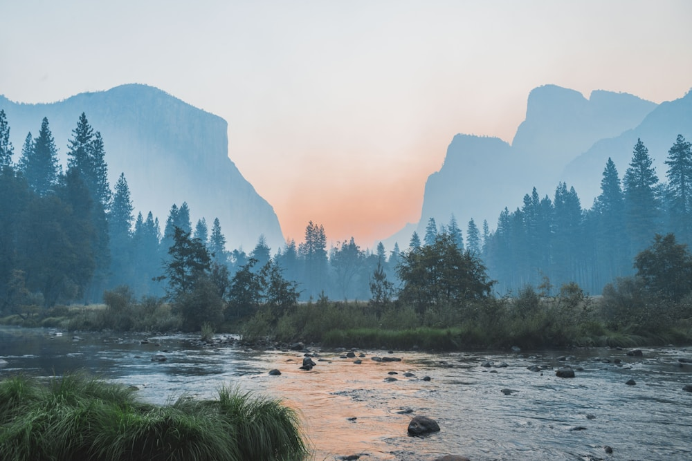

In high-altitude mountaineering, the outer hard shell jacket is your fortress. When standing on an exposed knife-edge arête in a torrential alpine blizzard, the shell must withstand the crushing physical force of horizontal wind-driven rain, sleet, and ice crystals without allowing a single drop of liquid water to penetrate.
Simultaneously, the shell must permit liters of water vapor generated by the climbing athlete to escape into the atmosphere. This extraordinary dual functionality is measured by two fundamental scientific standards: Hydrostatic Head Water Column Resistance (Waterproofness) and Moisture Vapor Transmission Rate (MVTR / RET Breathability). At Alpine Layer Fox, our hard shells utilize high-tenacity 3-Layer GORE-TEX Pro ePTFE membranes. In this masterclass, we explore the membrane physics, micro-porosity, and seam engineering of expedition hard shells.
1. The Physics of Hydrostatic Head Testing (ISO 811)
How waterproof ratings are laboratory certified:
- The Water Column Test: A circular sample of fabric is clamped beneath a vertical tube of water. The height of the water column is increased until three droplets force their way through the fabric.
- The 28,000mm Rating: Our 3-layer hard shells withstand a staggering 28-meter tall column of water pressure (approx. 40 psi), far exceeding standard rainfall (1,500mm) and kneepads resting in wet snow (10,000mm).
- Micro-Porous Lattices: The expanded polytetrafluoroethylene (ePTFE) membrane contains over 1.4 billion microscopic pores per square centimeter. Each pore is 20,000 times smaller than a water droplet, making liquid penetration physically impossible.
“True alpine hard shells are physical filters: impenetrable to liquid water droplets from the outside, yet wide open to escaping water vapor molecules from within.”
2. Measuring True Breathability: RET vs. MVTR
Why the Hohenstein RET index is the gold standard for mountaineers:
- Inverted Cup MVTR Test: Measures the weight of water vapor passing through a square meter of fabric over 24 hours (our shells achieve > 25,000 g/m²/24h).
- Hohenstein Skin Model (RET Rating): Measures the exact resistance a fabric poses to evaporating moisture vapor. Lower is better. A rating of RET < 4.5 represents the "Extremely Breathable" classification.
- The Role of Internal Heat Pressure: The warmer you get during an ascent, the higher the vapor pressure inside your jacket, accelerating moisture transmission through the membrane.
3. 3-Layer Lamination Architecture: Face, Membrane, Backer
How three micro-layers fuse into indestructible armor:
Unlike cheap 2.5-layer jackets with painted PU coatings that peel, our 3-Layer construction permanently bonds a 70D high-tenacity ripstop nylon face fabric, the ePTFE membrane, and a low-friction Micro Grid woven backer into a unified composite shield.
4. Waterproof-Breathable Membrane Systems Comparison Matrix
| Membrane Architecture | Hydrostatic Head (Waterproof) | Breathability (RET Index) | Abrasion & Rock Durability |
|---|---|---|---|
| 3-Layer GORE-TEX Pro ePTFE (Alpine Layer Fox) | 28,000 mm (Extreme Hurricane Proof) | RET < 4.5 (Extremely Breathable) | ★★★★★ (70D High-Tenacity Ripstop) |
| Monolithic Polyurethane (PU) Coated 2.5L | 10,000 mm (Moderate Rain Only) | RET 13.0 (Sweat Condenses Rapidly) | ★★☆☆☆ (Delaminates in 2 Years) |
| Traditional Rubberized PVC Raincoat | 50,000 mm (100% Non-Porous) | RET ∞ (Zero Breathability / Sauna) | ★★★☆☆ (Heavy & Non-Breathable) |
5. 8mm Micro-Seam Taping and Weight Optimization
Standard outdoor jackets use wide 20mm seam tape that stiffens the fabric and blocks breathability. Our atelier utilizes ultra-narrow 8mm waterproof seam tape applied with laser guidance, reducing weight and increasing breathable surface area.
6. Helmet-Compatible Storm Hoods with Three-Point Cording
Our storm hoods are sculpted to fit securely over climbing helmets without restricting peripheral vision, featuring a stiffened laminated brim that channels driving rain away from the climber's face.
7. YKK AquaGuard Vislon Waterproof Zippers
Equipped with polyurethane-laminated YKK AquaGuard zippers, our jackets eliminate the need for heavy, freezing storm flaps while guaranteeing complete weather impermeability.
8. Built to Outlast the Storms of the World
An Alpine Layer Fox hard shell is an indestructible fortress of modern textile science, engineered to bring you living space safely from the most extreme summits on Earth.
9. Dope-Dyed Solution Pigmentation for UV Resistance
The face fabric yarns are dyed using molten solution pigmentation before extrusion, ensuring the vibrant solar summit orange color never fades under intense high-altitude ultraviolet radiation.
10. Articulated Elbow Patterning and High-Reach Sleeves
Three-dimensional ergonomic sleeve patterning ensures that when swinging ice axes overhead, the jacket hem remains securely anchored under your climbing harness without riding up.
11. An Eternal Covenant of Hard-Shell Weather Armor
At Alpine Layer Fox, our mastery of 3-layer waterproof-breathable membranes ensures that every technical shell represents the ultimate pinnacle of storm protection, durability, and climbing freedom.
12. Dope-Dyed Solution Pigmentation for UV Resistance
The face fabric yarns are dyed using molten solution pigmentation before extrusion, ensuring the vibrant solar summit orange color never fades under intense high-altitude ultraviolet radiation.
13. Articulated Elbow Patterning and High-Reach Sleeves
Three-dimensional ergonomic sleeve patterning ensures that when swinging ice axes overhead, the jacket hem remains securely anchored under your climbing harness without riding up.
14. The Intoxicating Security of a 28,000mm Weather Shield
Standing amidst a screaming summit blizzard while remaining completely dry and warm inside your 3-layer hard shell is the ultimate proof of modern membrane engineering excellence.
15. The Master Blueprint for Expedition Storm Armor
At Alpine Layer Fox, our devotion to 3-layer GORE-TEX Pro ePTFE lamination honors the highest standards of alpine safety, delivering technical outerwear that withstands the most severe weather on Earth.
16. Laser-Cut Internal Security Pockets with Cable Ports
Interior chest pockets are laser-cut and welded directly to the inner membrane backer, keeping satellite communicators and emergency headlamp lithium batteries warm against body heat.
17. An Eternal Covenant of Hard-Shell Weather Armor
By combining 28,000mm waterproof ratings with RET < 4.5 breathability, Alpine Layer Fox creates technical hard shells that represent the ultimate pinnacle of mountain protection and athletic freedom.
18. Ultrasonic Membrane Welding and Laser-Cut Seam Anchors
All internal reinforcement patches are laser-cut and ultrasonically welded directly to the inner Micro Grid backer, eliminating stitch perforations and ensuring 100% waterproof reliability under heavy harness abrasion.
19. High-Tenacity Cordura Reinforcement on High-Wear Zones
Shoulders and forearms are reinforced with 100-denier Cordura ripstop overlays, providing impenetrable resistance against sharp granite rock edges, ice screw teeth, and abrasive rope drag during technical climbing.
20. The Sovereign Standard of Technical Hard-Shell Armor
By uniting 28,000mm hydrostatic resistance with RET < 4.5 breathability, Alpine Layer Fox creates technical outerwear that represents the ultimate pinnacle of alpine protection, physical durability, and climbing freedom.
21. The Unrivaled Security of Stormproof Outerwear
Standing on a storm-swept summit arête while remaining completely warm and dry inside your 3-layer hard shell is the ultimate proof of modern membrane engineering excellence, giving climbers confidence in extreme conditions.
22. An Everlasting Standard of Hard-Shell Weather Armor
At Alpine Layer Fox, our devotion to 28,000mm hydrostatic resistance and RET < 4.5 breathability ensures that every hard shell represents the pinnacle of storm protection, durability, and climbing freedom.
Frequently Asked Questions on 3L Hard Shells

Elena Rostova
Director of Outerwear Design at Alpine Layer Fox. Elena has completed ascents of all six great north faces of the Alps and tests hard shells in Manhattan.